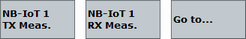
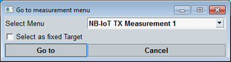

When using the NB-IoT signaling application and an NB-IoT measurement in parallel, use a shortcut softkey to switch to the measurement.

Using one of these softkeys, ensures that the measurement is configured compatible to the settings of the signaling application. When you use the softkey to switch to a TX measurement, the combined signal path scenario is activated automatically in the measurement.
- The measurement and the signaling application can be used in parallel, i.e. both DL signal transmission and measurement can be switched on.
- The signaling RF settings are also used for the measurement.
- Some measurement control settings are configured compatible with the signaling settings.
- A suitable trigger signal provided by the signaling application is selected as trigger source for the measurement.
If the softkey label equals "Go to...", the softkey opens a dialog box with a list of all available measurements. If the softkey label indicates a measurement name instead of "Go to...", this measurement has been assigned to the softkey as fixed target, see "Shortcut Configuration".
Three shortcut softkeys are available and can be set to different fixed targets.

Selects the target measurement you want to switch to.
Sets the selected measurement as fixed target of the softkey. The softkey label indicates the measurement name and switches directly to the selected target without opening the dialog box.
When the dialog box has been disabled, you can still change the target measurement or re-enable the dialog box using the configuration menu, see "Shortcut Configuration".
Press the "Go to" button to switch to the selected measurement or "Cancel" to abort.